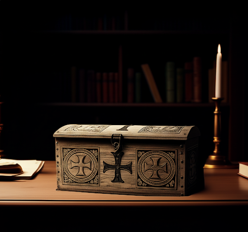

Escena 4: Fuga exitosa

Lupin logra perder a Sholmes y llega a la sala 5. Allí encuentra una caja con símbolos templarios.
Las abres usando una llave que tenias desde el inicio.
La cargas sin abrir y escapas del museo